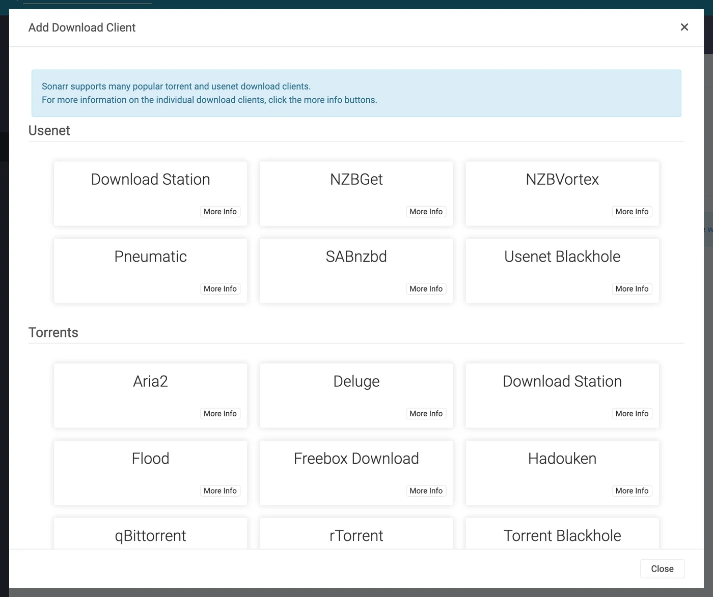
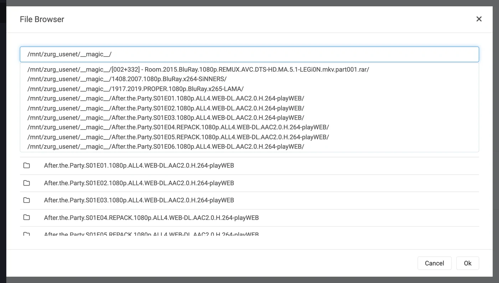
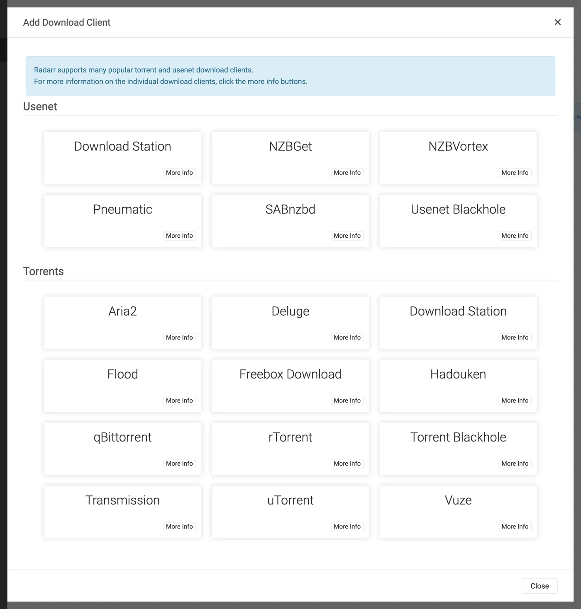
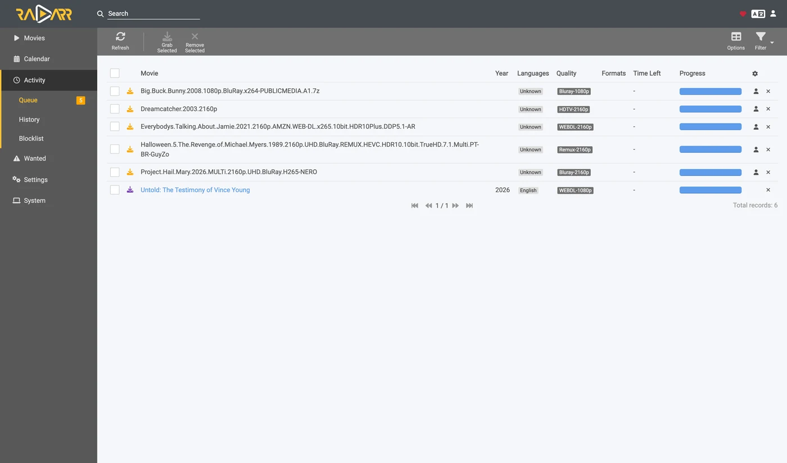
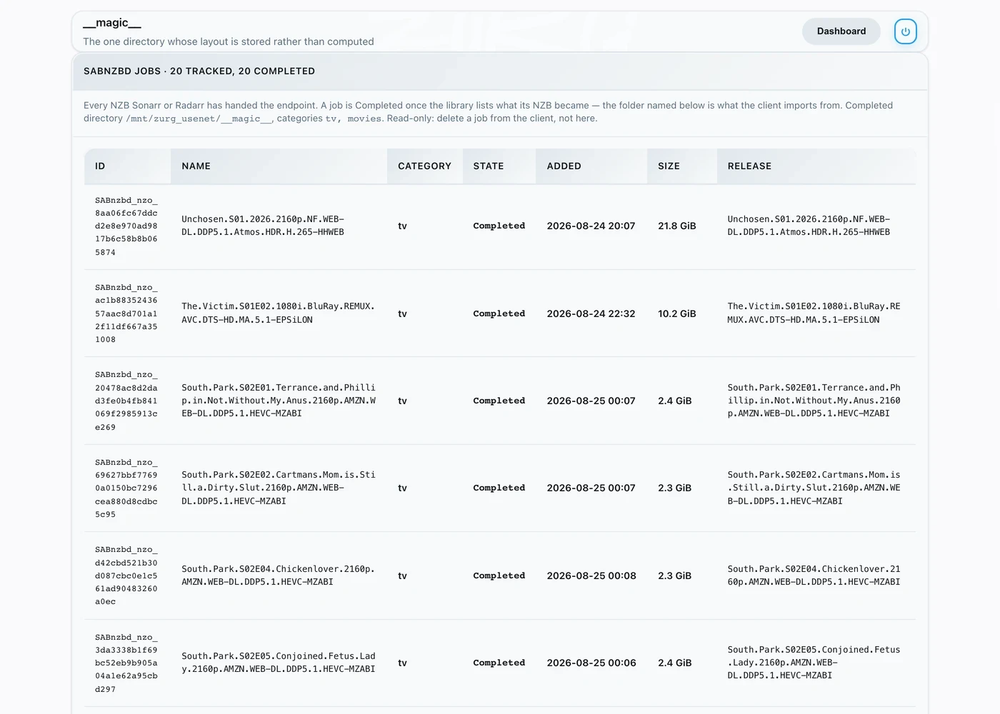

Sonarr e Radarr, passo a passo
Há três formas de usar o Sonarr e o Radarr com o zurg. Escolha quem pesquisa no zurg ou nos *arrs. Veja qual escolher.
As duas primeiras podem rodar lado a lado. Elas compartilham a mesma pasta __magic__.
Aponte o Sonarr e o Radarr para o zurg para pegar conteúdo do Usenet sem um cliente. Nenhum vídeo completo é baixado ou descompactado durante a captura. NZBs e caches ainda usam espaço em disco. Esta página cobre o Usenet. O endpoint de torrent usa os mesmos clientes e compartilha a pasta. Veja Sonarr e Radarr para torrents.
Tudo abaixo foi capturado com o zurg nightly-993-g99bcf9a4, o Sonarr 4.0.19.2979 e o Radarr 6.3.0.10514, em uma instalação real com uma conta Usenet de verdade. Nomes de host e de usuário foram trocados por you@zurg-server. Os nomes dos indexadores são my-indexer. As chaves de API e as contagens da biblioteca são ilustrativas. Nada mais na saída capturada foi alterado. As linhas de log do torbox_nzb foram lidas do código-fonte do zurg em 2026-11-09, não capturadas ao vivo.
Antes de começar
Três coisas precisam ser verdade. Verifique as três agora, porque cada uma delas falha depois com um sintoma que parece não ter nada a ver.
- O zurg tem um provider
nzbou umtorbox_nzb(TorBox Pro). Sem um deles, não há nada para ler o que o endpoint grava, e todo job é marcado como Failed depois de 30 minutos, quando o zurg desiste de esperar que ele apareça na biblioteca. Veja Usenet, ou Usenet hospedado na TorBox para otorbox_nzb. magic.enabledestátrue. Sem isso, o diretório de concluídos não existe e toda importação falha. Veja__magic__.- O mount está visível para o *arr no caminho que o zurg informa. Se o Sonarr roda em um container, leia o
passo 8 antes de configurar qualquer coisa. Instalado como um app comum na mesma máquina, ele enxerga o mount onde o zurg o monta, com uma ressalva em cada sistema:- Linux: um *arr rodando com um usuário diferente do zurg vê uma pasta vazia até que
user_allow_otheresteja habilitado. Veja Configuração no Linux. - macOS: rode-o com o mesmo usuário do zurg. O mount fica em
/Volumes/Zurg, a menos que você tenha alteradomount_path. - Windows: rode o Sonarr e o Radarr como app na bandeja, que o instalador oferece, e não como serviço do Windows. A unidade
Z:do zurg pertence à sessão em que você está logado, e um serviço roda fora dela, então ele não enxerga a unidade. Veja as regras de sessão.
- Linux: um *arr rodando com um usuário diferente do zurg vê uma pasta vazia até que
Confira as duas primeiras direto no arquivo de configuração, no diretório de trabalho do zurg. No Windows, abra o config.yml no Bloco de Notas.
$ grep -A6 '^providers:' config.yml
providers:
- type: nzb
nntp:
host: news.example.com
port: 563
tls: true
username: <redacted>
password: <redacted>
$ grep -A4 '^magic:' config.yml
magic:
enabled: true
allow_delete: false
sidecar_max_mb: 32
sidecar_budget_mb: 2048allow_delete: false é o padrão seguro e não afeta as importações. Uma exclusão dentro de __magic__ apenas oculta a entrada, sem remover conteúdo da conta.
1. Ligue o endpoint
Duas formas, mesmo resultado. As duas gravam em config.yml e as duas exigem um reinício: as rotas que servem __magic__ e o endpoint do SABnzbd são registradas uma única vez, quando o zurg inicia.
Opção A — o painel
Abra o painel do zurg, clique em Config e role até __magic__ & Download Clients. Ative Serve __magic__ e SABnzbd Endpoint, depois defina SABnzbd Categories como tv, movies.

Config é onde a configuração fica; Magic é onde você vai acompanhar os grabs quando eles chegarem.

Deixe SABnzbd Completed Directory vazio, a menos que o seu *arr monte o zurg em um lugar diferente de onde o zurg está montado. Veja o
Opção B — config.yml
Adicione o bloco manualmente e reinicie o zurg.
magic:
enabled: true
sabnzbd:
enabled: true
api_key: "" # empty = zurg generates one and keeps it
categories: [tv, movies]
complete_dir: "" # empty = <mount_path>/__magic__/__all__As categorias não são pastas. Todas levam ao mesmo lugar: a pasta de um job é a própria pasta do release em __magic__/__all__. A lista existe só para que o Sonarr e o Radarr parem de avisar sobre uma categoria que não conseguem encontrar. Se a categoria do Sonarr for tv, então tv precisa estar nessa lista.
Reinicie o zurg e depois confirme que o provider foi aplicado:

Uma linha nzb ou torbox_nzb é suficiente para o endpoint.
2. Encontre a chave de API
A chave de API é toda a autenticação deste endpoint, então acerte ela uma vez e não a cole em nenhum lugar público.
Se você deixou api_key vazio, o zurg gerou uma na primeira inicialização e salvou em data/sabnzbd-apikey:
$ cat data/sabnzbd-apikey
0123456789abcdef0123456789abcdef
Chave ilustrativa, a sua será diferente. O arquivo continua existindo depois de reiniciar, então a chave é estável depois de gerada.
Se você definiu api_key manualmente, ela fica no config.yml e nenhum arquivo é criado. O dashboard mostra em qual dos dois casos você está, no final do bloco do passo 1. Ele exibe uma destas frases: pinned in config.yml under sabnzbd.api_key ou generated and kept in data/sabnzbd-apikey.
Este endpoint fica fora da autenticação básica do zurg. Nem o Sonarr nem o Radarr enviam autenticação básica para um cliente de download, e a camada HTTP deles transforma um 401 em "unable to connect", sem nenhuma informação útil. Por isso o zurg deixa /api de fora de propósito. A chave de API é o único portão. Trate essa porta como o resto do zurg: use em uma rede confiável ou atrás de algo que faça essa proteção.
3. Confirme que ela responde
Faça isso antes de mexer no Sonarr. Leva dez segundos e separa "o zurg está errado" de "o *arr está errado" durante todo o resto da configuração.
$ SAB=0123456789abcdef0123456789abcdef
$ ZURG=192.168.88.245:9996
$ curl -s "http://$ZURG/api?mode=version&apikey=$SAB&output=json"
{"version":"4.5.1"}
$ curl -s "http://$ZURG/api?mode=get_config&apikey=$SAB&output=json" \
| jq '.config.misc.complete_dir, [.config.categories[].name]'
"/mnt/zurg_usenet/__magic__/__all__"
[ "*", "tv", "movies" ]No PowerShell. Digite curl.exe, não curl: o curl do Windows PowerShell é outro comando.
PS> $SAB = "0123456789abcdef0123456789abcdef"
PS> $ZURG = "192.168.88.245:9996"
PS> curl.exe -s "http://$ZURG/api?mode=version&apikey=$SAB&output=json"
{"version":"4.5.1"}
PS> (Invoke-RestMethod "http://$ZURG/api?mode=get_config&apikey=$SAB&output=json").config.misc.complete_dir
Z:/__magic__/__all__complete_dir é o caminho que o zurg vai entregar aos clientes. Confira agora se é um caminho que eles conseguem abrir.
Depois, confira se uma chave errada é mesmo recusada (no Windows, use curl.exe com as mesmas URLs):
$ curl -s "http://$ZURG/api?mode=queue&apikey=wrongkey&output=json"
{"status":false,"error":"API Key Incorrect"}
$ curl -s "http://$ZURG/api?mode=queue&output=json"
{"status":false,"error":"API Key Required"}mode=version não é um teste de autenticação. Ele responde {"version":"4.5.1"} mesmo com uma chave errada. É assim que o SABnzbd de verdade se comporta, e o zurg copia esse comportamento. Use mode=queue ou mode=get_config quando o que você quer testar é a chave.
As duas formas de URL funcionam, então qualquer uma serve no campo URL Base do cliente:
Se /api retornar um 404 simples, sabnzbd.enabled ainda está como false ou o zurg não foi reiniciado depois que você mudou essa configuração.
4. Crie as pastas raiz
$ mkdir -p /mnt/zurg_usenet/__magic__/tv /mnt/zurg_usenet/__magic__/movies
$ ls -d /mnt/zurg_usenet/__magic__/tv /mnt/zurg_usenet/__magic__/movies
/mnt/zurg_usenet/__magic__/movies
/mnt/zurg_usenet/__magic__/tvPS> New-Item -ItemType Directory -Force Z:\__magic__\tv, Z:\__magic__\moviesOu crie as duas pastas no Explorer.
Substitua /mnt/zurg_usenet pelo seu próprio mount_path. Se não definir, o padrão é /mnt/zurg no Linux, /Volumes/Zurg no macOS e Z: no Windows. Os nomes das pastas são você quem escolhe; tv e movies só combinam com as categorias.
A pasta raiz fica ao lado do diretório de conclusão, nem nele nem acima dele. O zurg entrega aos clientes __magic__/__all__, que é a sua biblioteca como __all__ a lista. Suas pastas raiz ficam ao lado dela, em __magic__/tv e __magic__/movies. Não __magic__/__all__, não __magic__ em si e não /mnt/zurg_usenet. Os dois clientes disparam um health check quando uma pasta raiz é a pasta de saída do cliente de download, e o Radarr também dispara quando uma pasta raiz contém ela. Pastas irmãs não causam nenhum dos dois, e uma importação manual apontada para o diretório de conclusão aí tem um único release para analisar, e não sua biblioteca inteira.
Isto é o que acontece quando você erra. Os dois exemplos são reais, dos dois clientes. Foram capturados antes de o diretório de conclusão ser movido para __magic__/__all__, então os caminhos neles estão um nível acima dos seus. As duas regras que mostram são as mesmas:

Sonarr com o próprio diretório de conclusão adicionado como pasta raiz — ele avisa porque a pasta raiz é a pasta de saída.

Radarr com /mnt/zurg_usenet adicionado — ele avisa também pelo pai, o que o Sonarr não faz. Mova a pasta raiz para ao lado do diretório de conclusão e os dois avisos somem.
5. Adicione o cliente no Sonarr
Uma instalação nova do Sonarr bloqueia tudo atrás de uma tela de primeira execução. Escolha Forms (Login Page), defina um nome de usuário e uma senha e clique em Save.

Ele não deixa você passar até que Authentication Method seja algo diferente de None.

Depois de salvar, você é desconectado uma vez e cai na página de login.

Settings → Download Clients
Vá em Settings → Download Clients. Em uma instalação nova, só aparece o card +.

Clique no + em "Download Clients", e não no que fica mais embaixo, em "Remote Path Mappings".
Escolha SABnzbd na coluna Usenet.

O zurg imita especificamente o SABnzbd, então nada mais nessa lista vai funcionar.
A janela abre com os padrões do próprio SABnzbd: localhost, porta 8080, sem chave.

O que colocar em cada campo

A API key mostrada é apenas um exemplo — cole a sua.
No Docker, tanto "localhost" quanto o hostname mentem. Dentro de um container, localhost é o próprio container, e o hostname da máquina normalmente resolve para 127.0.1.1 — que também é o container. Use o IP da LAN ou do Tailscale do host, nunca localhost e nunca o hostname puro, mesmo que os dois funcionem bem no seu shell.
Clique em Test. Um tique verde significa que as quatro verificações do cliente passaram: versão, API key, configuração global e a categoria.

Agora clique em Save.

6. Adicione a pasta raiz no Sonarr
Vá em Settings → Media Management e role até o final da página.

Clique em Add Root Folder. Abre um navegador de arquivos com o sistema de arquivos do Sonarr, que no Docker é o do container.

Digite o caminho na caixa do topo. Se o mount estiver realmente visível para o Sonarr, o conteúdo de __magic__ aparece enquanto você digita: __all__ com todos os releases, e o que você tiver criado ao lado dele. Essa é a forma mais rápida de confirmar que o bind mount está correto.

Se isso aparecer vazio ou der erro, pare e corrija o mount antes de seguir em frente.

Termine o caminho em __magic__/tv (Z:\__magic__\tv no Windows) e clique em Ok.

Se Free Space mostrar um número plausível, o Sonarr consegue ler o mount. Unmapped Folders conta os releases que já estão ali.
7. Faça o mesmo no Radarr
Igual, com dois valores alterados: a categoria é movies e a pasta raiz é __magic__/movies.

A primeira execução do Radarr funciona do mesmo jeito: configure o Forms auth e depois faça login.

Settings → Download Clients → +, e depois SABnzbd em Usenet.

Mesmo host, mesma porta, mesma chave. Só o Category muda: movies, e não tv.

Clique em Test, espere o tique verde e depois em Save.

Depois vá em Settings → Media Management → Root Folders → Add Root Folder e adicione /mnt/zurg_usenet/__magic__/movies.
Um zurg, dois clientes, uma fila. A fila e o histórico do zurg são filtrados só pela categoria, e mais nada. Dois Sonarrs usando tv vão ver os jobs um do outro; o Sonarr em tv e o Radarr em movies não vão. Mantenha um cliente por categoria e esse problema nunca aparece.
8. Se o seu *arr estiver no Docker
Esta etapa é para Docker em um host Linux. O Docker Desktop no macOS e no Windows roda os contêineres dentro de uma máquina virtual. O bind rslave abaixo depende da propagação de montagem do Linux (veja Configuração do Docker), e passar o mount do zurg para um contêiner nesses sistemas não foi testado. No macOS e no Windows, instale o Sonarr e o Radarr como aplicativos comuns, como descrito em
Três problemas separados. O segundo custa um download a cada importação. O terceiro só aparece na primeira vez que o zurg reiniciar.
O caminho que o zurg informa precisa ser um caminho que o cliente consegue abrir
Se o container monta a biblioteca em um lugar diferente do que o zurg usa, toda importação falha com download doesn't contain intermediate path ou com uma verificação de health check de remote path. Você pode corrigir de qualquer um dos dois jeitos, ambos funcionam:
- Defina
sabnzbd.complete_dircom o caminho que o cliente enxerga. É mais simples quando há um só cliente, ou vários que concordam em montar a biblioteca no mesmo lugar. - Adicione um remote path mapping no *arr. Use isso quando clientes diferentes montam a biblioteca de formas diferentes.
sabnzbd:
complete_dir: "/data/zurg/__magic__/__all__" # what the *arr sees, not what zurg seesPara o segundo, vá em Settings → Download Clients e use o + em Remote Path Mappings, o de baixo da página, e não o que você usou no passo 5.

O Host precisa ser exatamente a string de host que você digitou no download client. O Remote Path é o que o zurg informa; o Local Path é onde o cliente enxerga esse caminho.
Um único volume para a pasta de downloads e as pastas raiz
Um import de __magic__/__all__ para __magic__/tv é de graça porque é um rename. Um rename só funciona dentro de um mesmo mount. Se você der ao container as duas pastas como dois volumes, ele enxerga dois sistemas de arquivos. Os dois são o mount do zurg por baixo, e mesmo assim não importa.
volumes: # do not do this
- /mnt/zurg_usenet/__magic__/__all__:/downloads
- /mnt/zurg_usenet/__magic__/tv:/tvO kernel recusa o rename dentro do container. Aí o Sonarr e o Radarr copiam o arquivo e apagam o original sem avisar. Cada import baixa o release inteiro da sua conta e grava no disco do zurg. O import ainda dá certo, só que fica lento. Um episódio de 1,46 GB levou 50 segundos e gerou 2,9 GB de tráfego desse jeito. Com um volume só, levou um segundo e não leu nada.
Dê ao container um volume só, que tenha o mount inteiro do zurg. Acesse a pasta de download e as pastas raiz por ele. O bind da próxima seção faz exatamente isso. Um remote path mapping ou o complete_dir então aponta o cliente para o __all__ dentro desse mesmo volume.
Um import manual com Hardlink/Copy Files também copia. Escolha Move Files.
Monte o pai do ponto de montagem, não o próprio ponto de montagem
Reiniciar o zurg desmonta /mnt/zurg_usenet e monta de novo. Um container que montou o próprio ponto de montagem continua com a conexão fuse com que foi iniciado, e essa conexão agora está morta. Toda leitura então responde Socket not connected. Como os dois clientes verificam o espaço livre na pasta raiz antes de pegar um release, todo release é rejeitado em silêncio:
FreeSpaceSpecification: Socket not connectedNada nos dois clientes diz que a montagem está obsoleta, a pasta ainda aparece dentro do container, e um grab interativo enviado direto ao cliente ainda funciona. O que você vê é um *arr que simplesmente parou de buscar.
Monte o diretório pai com rslave, e a remontagem chega como um evento de sub-montagem que o container acompanha:
volumes:
- type: bind
source: /mnt # the parent, not /mnt/zurg_usenet
target: /mnt
bind:
propagation: rslaveConfira um container depois de qualquer reinício do zurg. Você quer ver um tamanho, não um erro:
$ docker exec radarr df -h /mnt/zurg_usenet
Filesystem Size Used Avail Use% Mounted on
zurg{PGSq4}: 1.0P 0 1.0P 0% /mnt/zurg_usenetO petabyte é o zurg reportando um sistema de arquivos virtual, não um disco. Isso é esperado, e é justamente o que satisfaz a verificação de espaço livre do *arr.
9. Acompanhe um grab passando pelo sistema
Não recebi nenhum texto para traduzir. Envie o trecho em inglês que você quer que eu traduza.
Grab it
Abra um filme (ou um episódio), clique em Interactive Search e escolha um lançamento.

A coluna Source mostra nzb, que é o protocolo que o zurg consegue usar.
Clique no botão com a seta circular no fim da linha para pegar o lançamento. Se ele não corresponder direitinho, o cliente pede para você confirmar o mapeamento antes:

Override and Grab aparece quando o cliente quer que você confirme o que é o lançamento. Confira o mapeamento e clique em Grab Release. Um grab automático normal nunca mostra essa janela.
Ele aparece na fila

Activity → Queue logo após o envio. Repare na barra de progresso: ela está cheia, e Time Left aparece como um traço. Não há download para medir, então um item está na fila ou já concluído, sem nada no meio. As outras linhas aqui pertencem a um segundo Radarr apontado para o mesmo zurg e na mesma categoria — veja a nota no passo 7.
O zurg grava o NZB e o lê
Aug 25 14:44:03 zurg-server zurg[3034965]: INFO nzb Loaded NZB
Last.Week.Tonight.with.John.Oliver.S13E22.480p.WEB.x264-RMTeam.nzb: 4 files
Aug 25 14:50:28 zurg-server zurg[3034965]: INFO nzb Loaded NZB
Untold.The.Testimony.of.Vince.Young.2026.1080p.NF.WEB-DL.DD+5.1.Atmos.H.264-playWEB.nzb: 9 filesLoaded NZB … : N files é a linha que diz que o NZB foi analisado com sucesso. Se uma tarefa aparecer como Failed depois de 30 minutos, quando o zurg desiste de esperar que ela apareça na biblioteca, é justamente essa linha que está faltando.
A importação acontece

Activity → History. Dois eventos, com segundos de diferença: Grabbed, depois Movie Imported.

Status: Downloaded, Size 4.7 GiB — e nada foi baixado.
Confirme que o arquivo é real
A importação moveu o arquivo para a pasta raiz. Leia as duas pontas dele e pergunte ao ffprobe o que ele é:
Se o seu shell não encontrar ffprobe, use ~/zurg/bin/ffprobe: o setup coloca uma cópia dele ali quando nenhuma foi instalada.
$ ls -la "/mnt/zurg_usenet/__magic__/movies/Untold - The Testimony of Vince Young (2026)/"
-rw-r--r-- 1 you you 4920958828 Aug 25 14:53 Untold.The.Testimony…playWEB.mkv
$ dd if="$F" bs=1M count=1 >/dev/null
1048576 bytes (1.0 MB, 1.0 MiB) copied, 0.0429446 s, 24.4 MB/s
$ ffprobe -v error -show_entries format=duration,size,format_name \
-of default=noprint_wrappers=1 "$F"
format_name=matroska,webm
duration=4709.440000
size=4920958828No PowerShell, a partir da pasta do zurg. O setup colocou bin\ffprobe.exe ali, a menos que um ffprobe já estivesse no seu PATH; nesse caso, digite ffprobe no lugar:
PS> $F = Get-Item "Z:\__magic__\movies\Untold - The Testimony of Vince Young (2026)\*.mkv"
PS> $F.Length
4920958828
PS> bin\ffprobe.exe -v error -show_entries format=duration,size,format_name -of default=noprint_wrappers=1 $F.FullName
format_name=matroska,webm
duration=4709.440000
size=4920958828Um Matroska de 78 minutos, transmitido a partir de artigos Usenet sob demanda. Os bytes chegam quando algo os lê, não quando o *arr importa.
10. Adicionando um lançamento manualmente
Às vezes o Sonarr ou o Radarr nunca pega o lançamento que você quer. Os indexadores que ele pesquisa podem não ter, ou um perfil de qualidade ou formato personalizado pode rejeitá-lo. Você pode entregar o NZB para o zurg por conta própria, na categoria do app que deve importar. Esse app então importa como se ele mesmo tivesse baixado.
Se o lançamento estiver em um indexador que o app pesquisa, tente o app primeiro. Interactive Search também lista os lançamentos rejeitados. Baixar um deles envia para o zurg como qualquer outro download. O Radarr baixou uma versão IMAX que o perfil dele tinha recusado, com pontuação 0 em um formato personalizado obrigatório, e importou.
$ SAB=0123456789abcdef0123456789abcdef
$ ZURG=192.168.88.245:9996
# an NZB file you already have (the upload field is called name, as in SABnzbd)
$ curl -s "http://$ZURG/api?mode=addfile&apikey=$SAB&cat=movies" \
-F 'name=@Movie.Title.2024.1080p.WEB-DL.nzb'
{"status":true,"nzo_ids":["SABnzbd_nzo_…"]}
# or a link to one, which zurg downloads itself
$ curl -s -G "http://$ZURG/api" \
--data-urlencode mode=addurl --data-urlencode "apikey=$SAB" --data-urlencode cat=movies \
--data-urlencode 'name=https://indexer.example/getnzb/<id>?r=<indexer-key>' \
--data-urlencode nzbname=Movie.Title.2024.1080p.WEB-DL
{"status":true,"nzo_ids":["SABnzbd_nzo_…"]}No PowerShell, com curl.exe em vez de curl. Cada um responde {"status":true,"nzo_ids":[…]} como acima.
$SAB = "0123456789abcdef0123456789abcdef"
$ZURG = "192.168.88.245:9996"
# an NZB file you already have (the upload field is called name, as in SABnzbd)
curl.exe -s "http://$ZURG/api?mode=addfile&apikey=$SAB&cat=movies" -F "name=@Movie.Title.2024.1080p.WEB-DL.nzb"
# or a link to one, which zurg downloads itself
curl.exe -s -G "http://$ZURG/api" `
--data-urlencode mode=addurl --data-urlencode "apikey=$SAB" --data-urlencode cat=movies `
--data-urlencode "name=https://indexer.example/getnzb/<id>?r=<indexer-key>" `
--data-urlencode nzbname=Movie.Title.2024.1080p.WEB-DL--data-urlencode mantém o ? e o & do próprio link dentro de name. O job aparece na fila do app na próxima verificação, em até um minuto.
Cinco coisas decidem o que acontece depois.
- O filme ou a série precisa já estar no app. Ele só importa o que consegue associar a algo que ele gerencia.
- O nome precisa dizer do que se trata. O job usa o nome do arquivo do NZB, ou
nzbnamese você passar. Semnzbname, oaddurlusa o nome de arquivo que o indexador entrega. Coloque o ano no nome. - A categoria escolhe o app.
cat=movieschega ao Radarr cujo cliente de download usamovies. Cada app só olha para a própria categoria. - O perfil de qualidade não bloqueia. O arquivo que você já tem pode bloquear. O Radarr não verifica nem as qualidades permitidas nem a pontuação mínima de formato personalizado na importação. Ele importou um BluRay 720p com pontuação 0 para um perfil que só permite 2160p e exige pontuação 100. Também importou um WEBRip 1080p para um filme cujo perfil só permite 720p. Depois, pegou um BluRay 1080p por cima como upgrade e apagou o WEBRip. Um WEB-DL adicionado depois parou na Activity com o status Not an upgrade for existing movie file. Activity → Queue → Manual Import traz o arquivo mesmo assim e substitui o atual.
- Falha é coisa sua para resolver. O app nunca coloca na blocklist nem remove um download que não foi ele quem baixou. Um lançamento cujos artigos já tinham saído dos servidores de notícias voltou como Failed do zurg e ficou na fila do Radarr com a mensagem Download has failed wasn't grabbed by Radarr, skipping automatic download handling. Remova da fila e escolha outro lançamento.
Medido em 2026-10-10 com o Radarr 6.3, usando addfile e addurl, inclusive com um perfil que exige um formato personalizado criado a partir de um nome de lançamento. Toda importação foi um rename para __magic__/movies e nada foi copiado. O Sonarr não foi testado.
Obrigado ao .telmen no Discord por perguntar como fazer isso com Usenet.
Assistindo pelo lado do zurg
A página /magic/ do zurg lista todos os NZB que o endpoint já recebeu. O Sonarr e o Radarr removem os jobs que pegaram, e o registro fica guardado por uma semana depois disso, para que uma consulta que coincida com uma exclusão responda sempre da mesma forma duas vezes.
Um job Failed ou Stuck (na fila há mais de uma hora) que nenhum cliente vai remover nunca, por exemplo depois que você para de usar o zurg como cliente de download, pode ser limpo aqui segurando o botão Clear. Ao limpar um job, o NZB dele é apagado, a menos que uma importação ainda o esteja usando.

Placements são os arquivos que os clientes moveram; tombstones são as pastas de job que eles apagaram depois.
Se um cliente copia em vez de mover, a página mostra uma tabela vermelha Imports that were copies. O zurg transforma essas cópias de volta em placements e as apaga, mas cada uma ainda foi um download completo, então corrija os volumes.

State é o que conta a história toda. Queued significa que o zurg ainda não terminou com o release, seja porque a biblioteca ainda não o listou, seja porque os tamanhos dos arquivos ainda não estabilizaram, seja porque os artigos ainda não foram verificados. Completed significa que está pronto para importar. Release mostra o nome da pasta de onde o cliente importa.
A coluna Release é lida da biblioteca a cada consulta, não fica armazenada. Renomeie o release no painel do zurg, deixe um repair reconstruí-lo, ou deixe o zurg adicionar um sufixo porque dois releases têm o mesmo nome: o job acompanha a mudança.
O que funciona e o que não funciona
Funciona:
- O teste de conexão, todas as quatro verificações, nos dois clientes.
- Captura, fila, histórico, importação por renomeação e a limpeza pós-importação.
- Nova captura do mesmo release. Cada captura posterior recebe um job id próprio, para que o cliente aja sobre ele e não reutilize o resultado do job antigo. O release por baixo continua sendo o mesmo. Uma nova captura de um release que uma importação anterior já esvaziou é informada como Failed. A pasta dele em
__magic__/__all__não tem mais nada para importar, e Failed faz o cliente colocar esse release na lista de bloqueio e pegar outro. A captura que fez o esvaziamento continua informando Completed até o cliente excluí-la. - Remover um job da fila, com ou sem exclusão do NZB.
mode=addurl, para uma pessoa ou uma automação que passa uma URL em vez de enviar o arquivo. Nenhum dos *arr usa.
Não faz:
- Sem progresso. Um job está na fila ou concluído; não há porcentagem entre os dois, porque não há download para medir. A fila mostra o tamanho declarado do NZB para que a linha não fique em branco.
- Sem pausar, retomar, limite de velocidade, prioridade ou script de pós-processamento. O SABnzbd tem todos esses recursos; o zurg não tem nada para aplicá-los.
del_filesem uma exclusão do histórico de um job concluído é ignorado. (Para um job Failed, ele apaga o NZB quando nada foi importado dele.) O cliente quer dizer "a pasta do job é sua de novo", mas o arquivo que acabou de ser importado continua sendo servido a partir desse NZB. A pasta que ele queria remover já foi removida — ele mesmo a apagou, pelo mount.- Autenticação básica não consegue proteger este endpoint. A chave de API é a única barreira.
O sinal de falha. Um release sem nada importável é informado como Failed, e os dois clientes o colocam na lista de bloqueio e capturam uma alternativa. Isso inclui um release cujos arquivos estão todos quebrados, apagados ou filtrados; um que contém só .par2, .sfv e arquivos auxiliares; um em que todo arquivo tem um formato que nada reproduz, que é o caso de um post ofuscado que nomeia o conjunto RAR como .z001….z133; e um arquivo já aberto e que não tem mídia. Um conjunto RAR é conteúdo, não estrutura: o zurg transmite o vídeo diretamente dele. Se um release realmente traz algo para o qual o zurg não tem extensão, amplie addl_playable_extensions em vez de colocá-lo na lista de bloqueio.
Os artigos são verificados antes de um job ser informado como concluído. O zurg espera até a biblioteca listar o release e os tamanhos dos arquivos se estabilizarem. Depois pergunta aos servidores de notícias sobre o início e o fim de cada arquivo de conteúdo. São os primeiros dezesseis artigos e o último. Ele também baixa o primeiro artigo de cada arquivo. Isso dá até sessenta e quatro deles, mais alguns a mais em um release com poucos arquivos. Alguns servidores de notícias ainda dizem que um artigo existe depois que o conteúdo foi removido, e só um download mostra isso. Um artigo baixado também mostra se ele pertence a este post e não a outro upload. O job continua Queued até isso ser respondido. Danos que a amostra não alcança não são detectados aqui; eles aparecem na leitura que os alcança. Um release cujos artigos sumiram passa primeiro por um reparo PAR2 e é verificado de novo depois que o reparo roda. Um que volta a ficar completo segue em frente. Um que ainda tenha artigos faltando, ou que nada consiga reparar, é informado como Failed com a contagem do que falta. Isso é uma falha de download, que é a que os clientes tratam: eles colocam o release na lista de bloqueio e capturam uma alternativa sem intervenção, em vez de importar algo que não vai reproduzir. Com torbox_nzb não há servidores de notícias nem verificação de artigos: uma captura é verificada pelo fato de a TorBox ter baixado.
Uma verificação que não consegue terminar não espera para sempre. Às vezes a verificação simplesmente não consegue completar. O pool de conexões pode estar fora do ar, a conta pode estar limitada, ou a verificação pode estourar o tempo. Isso não é uma resposta. O job continua Queued e é consultado de novo um minuto depois. O zurg conta as tentativas no job para que um reinício não as esqueça. Depois de trinta tentativas falhas seguidas que abranjam pelo menos três horas, o job vai para o histórico como Failed. A mensagem traz a contagem, o período e o último erro. Uma queda com recusas diretas chega a trinta em menos de uma hora e não trava a fila por causa disso.
Um release que sai da biblioteca faz o job falhar. Um release pode ser apagado pelo painel, ter seu NZB removido da pasta de monitoramento ou ser descartado por todas as contas. O job continua Queued por quinze minutos e depois vai para o histórico como Failed. O cliente coloca o release na lista de bloqueio e captura outro. A espera existe por causa dos reinícios. A biblioteca desmarca todos os releases enquanto carrega, e isso não pode ser lido como exclusão. Nada falha por esse motivo nos primeiros quinze minutos depois que o zurg inicia. Um job cujo release a biblioteca nunca listou não é afetado, porque ele ainda está chegando.
Solução de problemas
Ainda travado? Pergunte no fórum zurg-support no Discord. Pedindo ajuda explica o que incluir.